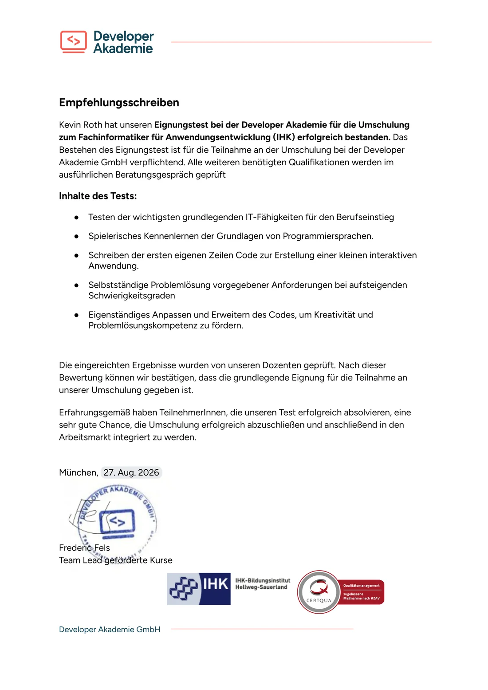
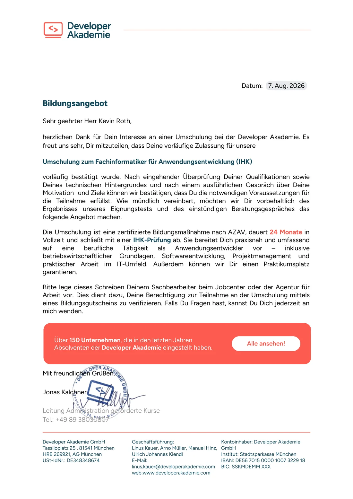
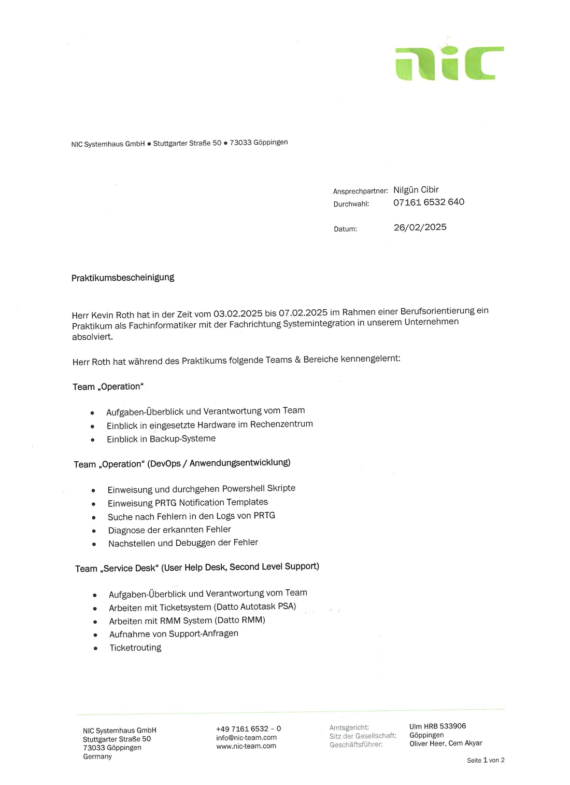

Ich will Fachinformatiker werden. Angefangen habe ich längst.
Ich bitte um die Förderung meiner Umschulung bei der Developer Akademie durch einen Bildungsgutschein.
Auf dieser Seite zeige ich Ihnen, was ich bereits kann, warum ich diesen Beruf erlernen möchte und warum ich zuversichtlich bin, die Umschulung erfolgreich abzuschließen.
Stand der Vorbereitung
- ✔ Praktikum in einem IT-Systemhaus zur Berufsorientierung (Februar 2025)
- ✔ Vorstellungsgespräch absolviert, Bildungsangebot erhalten (August 2026)
- ✔ Eignungstest bestanden, Empfehlungsschreiben erhalten (August 2026)
- ✔ Beratungstermin zum Bildungsgutschein angefragt (August 2026)
- ✔ Eigener Linux-Server mit vier Diensten in Betrieb (seit September 2026)
- → Selbststudium in C++, HTML, CSS, JavaScript und PHP (läuft)
- ○ Beratungsgespräch und Entscheidung über den Bildungsgutschein (stehen noch aus)
Stand: 10. Oktober 2026
Eckdaten der Umschulung
| Ziel | Fachinformatiker für Anwendungsentwicklung mit IHK-Abschluss |
|---|---|
| Bildungsträger | Developer Akademie GmbH, München Trägerzertifikat: TÜV Rheinland Cert GmbH, Nr. 01 600 2000730 |
| Maßnahme | „Fachinformatiker für Anwendungsentwicklung“, zugelassen nach AZAV Maßnahmezertifikat: CERTQUA GmbH, Nr. 2025M100542-10001 |
| Umfang | 24 Monate in Vollzeit, montags bis freitags von 8 bis 17 Uhr 3.500 Unterrichtseinheiten und 1.040 Stunden betriebliche Lernphase, verkürzt von regulär 36 Monaten |
| Praktikum | 6 Monate in einem Partnerunternehmen Der Praktikumsplatz ist laut Bildungsangebot garantiert. |
| Lernform | Zur Hälfte Präsenzunterricht am Standort München, zur Hälfte online Täglicher Live-Unterricht, persönliche Betreuung und individuelle Code-Reviews. Laptop, Headset, Maus und Lernplattform stellt die Developer Akademie. |
| Gewünschter Start | Nächster Kursbeginn, voraussichtlich Ende November 2026 |
| Förderung | Bildungsgutschein der Agentur für Arbeit (angefragt) Laut Developer Akademie zu 100 % über den Bildungsgutschein förderfähig |
| Auswahlverfahren | Eignungstest bestanden, Vorstellungsgespräch absolviert Empfehlungsschreiben und Bildungsangebot: siehe Nachweise |
| Schulabschluss | Realschulabschluss mit Qualifikation |
Ablauf der 24 Monate
- Monat 1 bis 15: Theorie und Grundlagen, nach 12 Monaten die Zwischenprüfung
- Monat 16 bis 21: Praktikum in einem Unternehmen
- Monat 22 bis 24: Prüfungsvorbereitung und IHK-Abschlussprüfung
Ablauf laut Developer Akademie. Bei einem Start Ende November 2026 läge die Zwischenprüfung etwa Ende 2027 und der Abschluss etwa Ende 2028.
Meine Motivation
Seit 2023 interessiere ich mich für C++, weil die Sprache ein solides Fundament für viele andere ist. Inzwischen lerne ich sie systematisch mit einem Kurs, mit Übungsaufgaben und mit einem eigenen Projekt. Hinzu kamen HTML, CSS, JavaScript, PHP, Linux und Git, zuletzt auch ein eigener Server.
An der Softwareentwicklung reizt mich das Tüfteln. Wenn etwas nicht funktioniert, lese ich die Fehlermeldung, suche die Ursache und probiere so lange, bis es läuft. Danach will ich verstehen, warum es läuft. Am besten lerne ich mit direktem Feedback. Wenn mir jemand zeigt, wie es besser geht, setze ich das sofort um.
Besonders interessieren mich IT-Sicherheit und Automatisierung. Beides steckt in meinem Server: Er ist nur über ein privates Netz erreichbar, und jede Nacht läuft automatisch ein verschlüsseltes Backup.
Seit rund zwei Jahren arbeite ich gezielt auf eine Ausbildung in diesem Beruf hin. Im Februar 2025 habe ich eine Woche lang in einem IT-Systemhaus den Berufsalltag kennengelernt. Die Arbeitserprobung im Sommer 2026 endete nicht so, wie ich es mir gewünscht hatte. Aufgegeben habe ich nicht. Ich habe mich bei der Developer Akademie beworben, den Eignungstest bestanden und ein Empfehlungsschreiben erhalten. Seitdem habe ich weitergelernt und einen eigenen Server aufgebaut.
Mein Ziel ist eine feste Stelle als Anwendungsentwickler. Dafür brauche ich einen anerkannten Abschluss und Praxis in einem Unternehmen. Beides bekomme ich mit der Umschulung.
Kevin Roth, Oktober 2026
Nachweise
Die Developer Akademie hat meine Eignung geprüft und mir die Teilnahme angeboten. Beide Dokumente hat sie mir im August 2026 ausgestellt. Den Berufsalltag in der IT habe ich schon im Februar 2025 bei einem Praktikum kennengelernt.
Ein Klick auf ein Dokument öffnet es in voller Größe.

Empfehlungsschreiben
27. August 2026 · 1 Seite · unterschrieben von Frederic Fels, Team Lead geförderte Kurse
Bestätigt, dass ich den Eignungstest für die Umschulung zum Fachinformatiker für Anwendungsentwicklung (IHK) erfolgreich bestanden habe.
„Die eingereichten Ergebnisse wurden von unseren Dozenten geprüft. Nach dieser Bewertung können wir bestätigen, dass die grundlegende Eignung für die Teilnahme an unserer Umschulung gegeben ist.“
„Erfahrungsgemäß haben TeilnehmerInnen, die unseren Test erfolgreich absolvieren, eine sehr gute Chance, die Umschulung erfolgreich abzuschließen und anschließend in den Arbeitsmarkt integriert zu werden.“
Inhalte des Tests:
- Grundlegende IT-Fähigkeiten für den Berufseinstieg
- Erste eigene Zeilen Code für eine kleine interaktive Anwendung
- Selbstständige Problemlösung bei steigendem Schwierigkeitsgrad
- Eigenständiges Anpassen und Erweitern des Codes

Bildungsangebot
7. August 2026 · Seite 1 von 9 · unterschrieben von Jonas Kalchner, Leitung Administration geförderte Kurse
Vorläufige Zulassung zur Umschulung. Bedingung war unter anderem der Eignungstest, den ich danach bestanden habe.
„Nach eingehender Überprüfung Deiner Qualifikationen sowie Deines technischen Hintergrundes und nach einem ausführlichen Gespräch über Deine Motivation und Ziele können wir bestätigen, dass Du die notwendigen Voraussetzungen für die Teilnahme erfüllst.“
„Außerdem können wir Dir einen Praktikumsplatz garantieren.“
Die weiteren acht Seiten enthalten Bildungsinhalte, Zertifikatsnummern und Maßnahmekosten.

Praktikumsbescheinigung
26. Februar 2025 · 2 Seiten · unterschrieben von Nilgün Cibir, HR-Managerin
Eine Woche Praktikum zur Berufsorientierung bei der NIC Systemhaus GmbH in Göppingen.
„Herr Kevin Roth hat in der Zeit vom 03.02.2025 bis 07.02.2025 im Rahmen einer Berufsorientierung ein Praktikum als Fachinformatiker mit der Fachrichtung Systemintegration in unserem Unternehmen absolviert.“
Teams und Aufgaben laut Bescheinigung:
- Operation: Einblick in die Hardware im Rechenzentrum und in die Backup-Systeme
- DevOps und Anwendungsentwicklung: PowerShell-Skripte, Fehlersuche in den Logs der Überwachungssoftware PRTG, Fehler nachstellen und debuggen
- Service Desk: Support-Anfragen im Ticketsystem, Benutzeranlage und Berechtigungen in Kundensystemen, Active Directory
- Netzwerk und Security: Switches, Access Points, Router und Firewalls, IP-Adressen und Routing
Backups und Überwachung habe ich dort im professionellen Betrieb gesehen. Auf meinem eigenen Server setze ich beides heute im Kleinen um.
Alle drei Dokumente reiche ich Ihnen gern vollständig als PDF ein.
Meine Projekte
Diese Projekte habe ich in Eigeninitiative umgesetzt, um zu lernen und um konkrete Probleme zu lösen.
Ein eigener Server für meine Familie
In Betrieb seit September 2026
Meine Mutter möchte ihr Microsoft-365-Abonnement kündigen, ohne auf ihre Fotos und Dokumente verzichten zu müssen. Sie arbeitet mit zwei Laptops und einem Smartphone, und alles soll auf jedem Gerät verfügbar sein. Dafür habe ich einen gebrauchten Mini-PC zu einem Server ausgebaut, den ich selbst betreibe. Er steht bei mir zu Hause.
So ist der Server aufgebaut:
Internet --X--> kein Zugang von außen
Laptops, Smartphones und mein PC
|
| Tailscale: privates Netz,
| verschlüsselt mit HTTPS
v
+------------------------------------+
| Heimserver (Mini-PC) |
| Debian 13 und Docker Compose |
| |
| Immich Fotos |
| Nextcloud Dateien |
| Joplin Server Notizen |
| CouchDB Obsidian-Sync |
| 3 x PostgreSQL Datenbanken |
| |
| Wartung nur per SSH-Schlüssel |
+------------------------------------+
|
| jede Nacht
v
Borg-Backup auf einer zweiten SSD
(verschlüsselt)
|
| Rückmeldung
v
Healthchecks: Bleibt die Rückmeldung
aus, bekomme ich eine Meldung.
Was ich umgesetzt habe:
- Debian Linux minimal installiert, alle Dienste als Docker-Container mit Docker Compose
- Vier Dienste: Immich für Fotos, Nextcloud für Dateien, Joplin Server für Notizen und CouchDB, um meine Lernnotizen in Obsidian zu synchronisieren
- Zugriff nur über ein privates Netz (Tailscale) mit gültigen HTTPS-Zertifikaten. Die Dienste sind öffentlich im Internet nicht erreichbar.
- Wartung per SSH nur mit Schlüssel. Passwort-Login und Root-Login sind abgeschaltet.
- Jede Nacht ein verschlüsseltes Backup mit Borg, inklusive der PostgreSQL-Datenbanken. Es bleiben 7 tägliche, 4 wöchentliche und 6 monatliche Stände erhalten.
- Überwachung mit Healthchecks. Bleibt die Rückmeldung eines Backups aus, werde ich benachrichtigt.
- Wiederherstellung getestet: Eine Datenbanksicherung habe ich aus dem Backup geholt und geprüft.
Was ich dabei gelernt habe: Linux-Administration, den Umgang mit Containern, die Sicherung von Datenbanken und Grundlagen der IT-Sicherheit. Außerdem weiß ich jetzt, dass ein Backup erst dann zählt, wenn man die Wiederherstellung ausprobiert hat.
Als Nächstes: Eine zweite Kopie der Backups auf einer externen Festplatte, damit die Daten auch einen Defekt des Servers überstehen.
Technik: Debian 13, Docker Compose, PostgreSQL, Tailscale, SSH, Borg (borgmatic), Healthchecks
Weitere Projekte
C++ mit Kurs und eigenem Projekt (in Arbeit)
Ich lerne C++ mit dem englischsprachigen Kurs „Beginning C++ Programming – From Beginner to Beyond“ und löse die Übungen selbst. In CLion habe ich mir eine CMake-Vorlage gebaut, mit der ich meine Programme für Linux und für Windows erstellen kann. Als Übungsprojekt programmiere ich gerade das Logikspiel 2048 nach.
Gelernt: Erst eine funktionierende Lösung, dann aufräumen. Feedback baue ich sofort ein.
Technik: C++, CMake, CLion, MinGW, Git
Webseite mit Kontaktformular (umgesetzt)
Mit HTML, CSS und JavaScript habe ich eine Übungswebseite mit Bildern, Musik und einer besonderen Schriftart gebaut. Für das Kontaktformular habe ich ein PHP-Skript geschrieben, das jede Nachricht mit Datum, Uhrzeit, Name und E-Mail-Adresse als Zeile in einer CSV-Datei speichert. Es läuft auf einem Apache-Webserver in einer virtuellen Maschine mit Ubuntu. Meine Projekte verwalte ich mit Git und GitHub.
Gelernt: Vor dem Wechsel an einen anderen Rechner lade ich immer alle Änderungen auf GitHub hoch. Das habe ich gelernt, als meine Arbeit auf einer ausgeschalteten virtuellen Maschine festsaß.
Technik: HTML, CSS, JavaScript, PHP, Apache, GitHub
Linux und Fehlersuche (im Alltag)
Mein Hauptrechner läuft unter Linux (Fedora-basiert). Als ein Programm dort nicht starten wollte, habe ich es aus dem Quellcode als RPM-Paket gebaut und die Zeile im Code angepasst, die den Start verhindert hat. Ich arbeite mit virtuellen Maschinen und Containern, habe unser Heimnetz mit zwei FRITZ!Boxen eingerichtet und betreue die Rechner meiner Familie.
Gelernt: Fehlermeldungen genau lesen und die Ursache Schritt für Schritt eingrenzen.
Technik: Linux, Bash, RPM, VirtualBox, Distrobox
Werkzeuge: CLion, WebStorm, PhpStorm, VS Code, Git, Vim und Obsidian für meine Lernnotizen
Sprachen: Deutsch als Muttersprache. Englisch: Mein C++-Kurs ist englischsprachig, meine Rechner sind auf Englisch eingestellt.
Lehrplan: Was ich mitbringe und was ich noch lernen muss
Ich habe die Bildungsinhalte aus dem Bildungsangebot mit dem verglichen, was ich schon praktisch gemacht habe. Ich fange nicht bei null an. Den größeren Teil muss ich aber noch lernen, und dafür brauche ich die Umschulung.
Von den 21 Themen der Module 1 bis 6 habe ich 4 schon praktisch genutzt, 5 kenne ich in den Grundlagen und 12 sind neu für mich.
| Thema | Mein Stand | Woher ich es kenne |
|---|---|---|
| Modul 1: Grundlagen der IT | ||
| Betriebssysteme, Netzwerke und IT-Sicherheit | praktisch genutzt | Linux im Alltag und auf meinem Server, Heimnetz mit zwei FRITZ!Boxen, Zugang per VPN und SSH-Schlüssel |
| Hard- und Software-Grundlagen | praktisch genutzt | Mini-PC mit zusätzlicher SSD als Server eingerichtet, Rechner der Familie betreut |
| Datenstrukturen und Algorithmen | Grundlagen | Übungen im C++-Kurs, zum Beispiel mit Vektoren und verschachtelten Schleifen |
| Modul 2: Programmierung und Softwareentwicklung | ||
| Objektorientierte Programmierung mit Python und JavaScript | neu | Erste Erfahrung mit Objekten in JavaScript |
| Webentwicklung (Frontend und Backend) | praktisch genutzt | Webseite mit HTML, CSS und JavaScript, Kontaktformular mit PHP |
| Software-Architektur und API-Design | neu | – |
| Versionskontrolle mit Git | praktisch genutzt | Meine Projekte auf zwei Rechnern mit Git und GitHub |
| Agile Entwicklung (Scrum) | neu | – |
| Modul 3: Prompt Engineering | ||
| ChatGPT, GitHub Copilot, Gemini | Grundlagen | Ich nutze KI-Assistenten beim Lernen und für meine Notizen |
| Automatisierte Workflows mit n8n | neu | – |
| Praktische Anwendung von KI in Projekten | neu | – |
| Modul 4: Datenbanken | ||
| Relationale Datenbanken | Grundlagen | Drei PostgreSQL-Datenbanken auf meinem Server betrieben und gesichert |
| SQL und Datenmodellierung | neu | – |
| Datenbankdesign und -optimierung | neu | – |
| Schnittstellenentwicklung (REST-APIs) | neu | – |
| Modul 5: Betriebswirtschaft und Organisation | ||
| Projektmanagement und IT-Prozesse | neu | – |
| Betriebswirtschaftliche Grundlagen | neu | – |
| Arbeitsorganisation und Dokumentation | neu | – |
| Modul 6: Praktische Projektarbeit | ||
| Eigenständige Planung und Umsetzung von Softwareprojekten | Grundlagen | Eigene kleine Projekte: Server, Webseite, Spiel 2048 (in Arbeit) |
| Anwendung der Technologien in praxisnahen Szenarien | Grundlagen | Mein Server wird im Familienalltag genutzt |
| Abschlussprojekt nach IHK-Vorgabe | neu | – |
Zusätzlich bringe ich mit: C++ als meine wichtigste Programmiersprache, PHP und Englischkenntnisse.
Module 1 bis 6 laut Bildungsangebot der Developer Akademie. Modul 7 (Vorbereitung auf die IHK-Prüfung) und Modul 8 (Bewerbungstraining) sind hier nicht aufgeführt.
Mein Werdegang
- 2023 – Interesse an C++
Die Sprache ist ein solides Fundament für viele andere. Heute ist sie meine wichtigste Programmiersprache. - 2024 bis 2026 – Weg in die Ausbildung
Ich habe mich um eine Arbeitserprobung als Einstieg in die Ausbildung zum Fachinformatiker für Anwendungsentwicklung bemüht. - Februar 2025 – Praktikum im IT-Systemhaus
Eine Woche Berufsorientierung als Fachinformatiker für Systemintegration bei der NIC Systemhaus GmbH in Göppingen. Ich habe fünf Teams und Bereiche kennengelernt, vom Rechenzentrum über den Service Desk bis zur Anwendungsentwicklung. - Sommer 2026 – Arbeitserprobung
Aufgaben in HTML, JavaScript und PHP. Die Einschätzung fiel negativ aus, und mir wurde empfohlen, einen anderen Träger zu suchen. - August 2026 – Bewerbung bei der Developer Akademie
Vorstellungsgespräch und Bildungsangebot, danach Eignungstest bestanden und Empfehlungsschreiben erhalten. Anschließend habe ich einen Beratungstermin zum Bildungsgutschein angefragt. - August 2026 – Webserver und PHP
Eine virtuelle Maschine mit Ubuntu und einem Apache-Webserver, darauf ein Kontaktformular in PHP. - September 2026 – Eigener Server in Betrieb
Vier Dienste für meine Familie und mich, nächtliche verschlüsselte Backups und eine Überwachung, die mich benachrichtigt, wenn ein Backup ausbleibt. - Herbst 2026 – C++-Projekte und Versionsverwaltung
Eigene CMake-Vorlage für Linux und Windows, Übungen aus dem Kurs und das Übungsprojekt 2048. Meine Projekte verwalte ich mit Git und GitHub. - 10. Oktober 2026 – Heute
Ich bereite mich auf das Beratungsgespräch zum Bildungsgutschein vor und lerne weiter. - Voraussichtlich Ende November 2026 – Möglicher Start der Umschulung
Nächster Kursbeginn bei der Developer Akademie. - Etwa Ende 2027 – Zwischenprüfung
Nach den ersten zwölf Monaten der Umschulung. - Etwa Ende 2028 – IHK-Abschluss
Fachinformatiker für Anwendungsentwicklung, nach sechs Monaten Praktikum und der Prüfungsvorbereitung.
Fragen und Antworten
Auf diese Fragen möchte ich vorab eingehen.
Warum eine Umschulung und nicht direkt eine Stelle?
Ich habe einen Realschulabschluss mit Qualifikation, aber keinen Berufsabschluss. In Stellenanzeigen für Anwendungsentwickler wird meist eine abgeschlossene Ausbildung oder ein Studium verlangt. Mit dem IHK-Abschluss kann ich dauerhaft als Fachkraft arbeiten.
Warum keine klassische Ausbildung?
Zunächst habe ich mich um den Einstieg über eine Ausbildung bemüht. Nach der Arbeitserprobung wurde mir empfohlen, einen anderen Träger zu suchen. Die Umschulung bei der Developer Akademie führt zum selben IHK-Abschluss. Sie dauert 24 statt 36 Monate, ich stehe dem Arbeitsmarkt also ein Jahr früher als Fachkraft zur Verfügung. Ein Praktikum in einem Unternehmen ist fester Bestandteil.
Was spricht dafür, dass ich die Umschulung erfolgreich abschließe?
Die Developer Akademie hat meine Eignung geprüft. Ihre Dozenten haben meine Testergebnisse bewertet und bestätigen im Empfehlungsschreiben, dass die grundlegende Eignung gegeben ist. Dazu kommen meine Projekte. Ich betreibe einen eigenen Linux-Server mit PostgreSQL-Datenbanken, programmiere in C++ und arbeite mit Git. Diese Themen kommen in der Umschulung wieder vor, ich kann also darauf aufbauen. Den Arbeitsalltag in einem IT-Unternehmen habe ich bei einem Praktikum in einem Systemhaus kennengelernt. Außerdem gebe ich nicht auf, wenn es schwierig wird. Nach der Arbeitserprobung habe ich mich bei einem anderen Träger beworben und weitergelernt.
Warum gerade die Developer Akademie?
- Der Lehrplan passt zu dem, was ich schon mache. Linux, Netzwerke, Datenbanken und Git nutze ich bereits.
- Es gibt täglichen Live-Unterricht, Feedback an sieben Tagen pro Woche und individuelle Code-Reviews. So lerne ich am besten.
- Ein eigenes Modul behandelt KI-Werkzeuge und automatisierte Workflows.
- Der Praktikumsplatz ist laut Bildungsangebot garantiert, und das Bewerbungstraining läuft bis zum Jobeinstieg, auch nach Kursende.
- Laut Bildungsangebot haben über 150 Unternehmen bereits Absolventinnen und Absolventen der Developer Akademie eingestellt.
Was bringt der Abschluss auf dem Arbeitsmarkt?
2025 war die Arbeitslosenquote von Menschen ohne Berufsabschluss rund sechsmal so hoch wie die von Menschen mit abgeschlossener Ausbildung. Heute gehöre ich zur ersten Gruppe. Mit dem IHK-Abschluss gehöre ich zur zweiten.
Arbeitslosenquote nach Berufsabschluss
Deutschland, Jahresdurchschnitt 2025
Zum Vergleich: über alle Erwerbspersonen 6,3 %. In Baden-Württemberg lagen die Quoten bei 14,7 % ohne und 2,8 % mit Berufsausbildung.
Quelle: Statistik der Bundesagentur für Arbeit, ausgewertet vom Statistischen Landesamt Baden-Württemberg im März 2026
Auch der IT-Arbeitsmarkt hat sich abgekühlt. Laut Bitkom fehlen immer noch 79.000 Fachkräfte. Gefragt bleiben qualifizierte Fachkräfte. Deshalb setze ich auf einen anerkannten IHK-Abschluss mit sechs Monaten Praxis in einem Unternehmen.
- 97 % der Unternehmen mit offenen IT-Stellen berichten von Problemen bei der Besetzung.
- 63 % der befragten Unternehmen erwarten, dass KI-Kenntnisse und -Tools künftig in allen IT-Berufen benötigt werden.
Quelle: Bitkom-Studie „Der Arbeitsmarkt für IT-Fachkräfte“ 2026
Wie organisiere ich die 24 Monate?
Der Unterricht läuft montags bis freitags von 8 bis 17 Uhr. Diese Zeiten halte ich verbindlich ein.
Die Umschulung findet zur Hälfte in Präsenz und zur Hälfte online statt. Für den Präsenzunterricht gehe ich an den Standort der Developer Akademie in München. Mein Vater arbeitet in München, und während des Präsenzunterrichts kann ich bei ihm unterkommen. Ich brauche dort also keine eigene Unterkunft.
Für den Online-Unterricht habe ich zu Hause einen eigenen Arbeitsplatz mit einem leistungsstarken PC, zwei Monitoren und einem Gigabit-Internetanschluss. Linux, Git und meine Entwicklungsumgebungen sind bereits eingerichtet. Laptop, Headset und Lernplattform stellt zusätzlich die Developer Akademie.
Was kommt nach der Umschulung?
Mein Ziel ist eine feste Stelle als Anwendungsentwickler. Im sechsmonatigen Praktikum sammle ich Berufspraxis in einem Unternehmen. Das Bewerbungs- und Karrieretraining der Developer Akademie begleitet mich laut Bildungsangebot bis zum Jobeinstieg.
Mein Einsatz
Darauf können Sie sich verlassen:
Bis zum Kursbeginn (voraussichtlich Ende November 2026)
- C++-Kurs fortsetzen und mein Übungsprojekt 2048 fertigstellen (läuft)
- JavaScript-Grundlagen vertiefen (läuft)
- Einstieg in Python, die Backend-Sprache der Umschulung (geplant)
- Zweite Backup-Kopie meines Servers auf einer externen Festplatte (geplant)
Während der 24 Monate
- Ich nehme in Vollzeit teil, auch am täglichen Live-Unterricht.
- Ich bitte aktiv um Feedback und setze die Hinweise aus Code-Reviews konsequent um.
- Auf Wunsch informiere ich Sie regelmäßig über meinen Stand, zum Beispiel nach der Zwischenprüfung.
- Ich bewerbe mich aktiv und nutze das Praktikum für den Einstieg in ein Unternehmen.
Ich freue mich auf das Gespräch mit Ihnen.
Meine Kontaktdaten liegen Ihnen vor. Ich bin kurzfristig telefonisch und per E-Mail erreichbar.
Kevin Roth, Oktober 2026